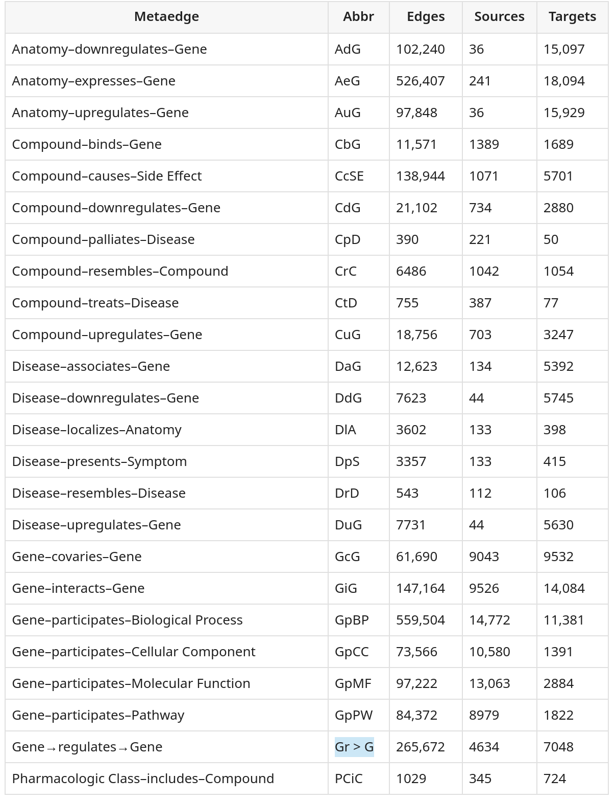
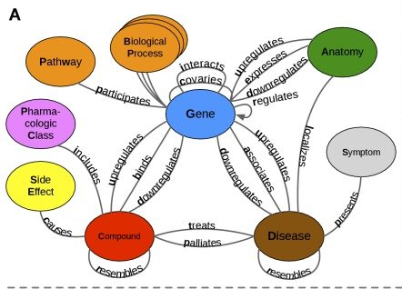
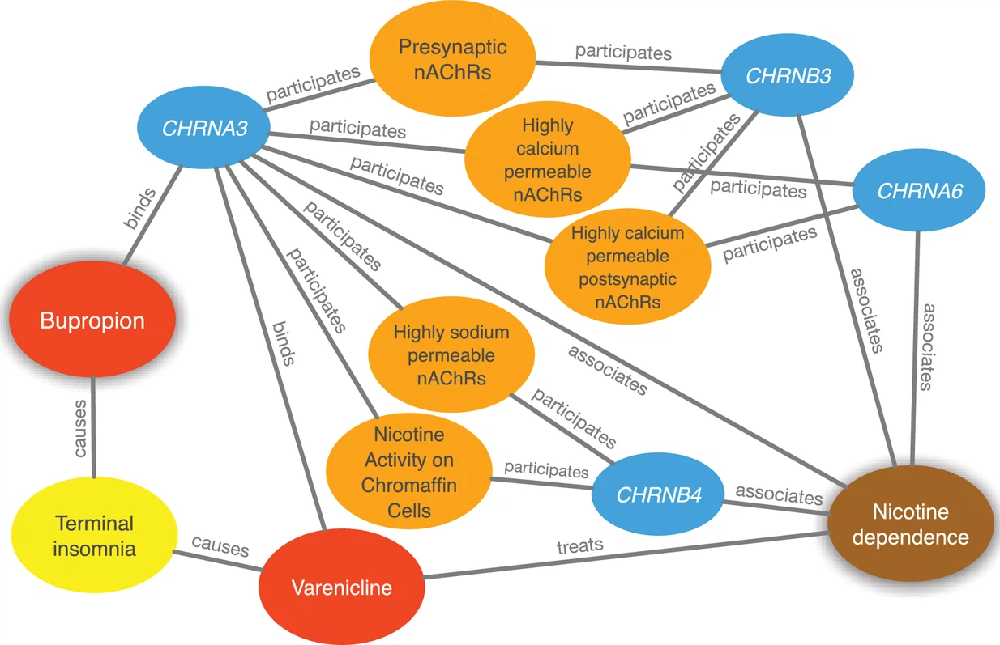
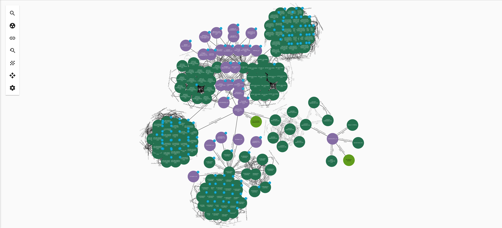

Knowledge Graphs - Making Sense of Linked Data
Alastair McKinley
CTO - Analytics Engines
What is a Knowledge Graph?
- A method of data organisation
- Stores objects and relationships between objects
- Semantic information about relationships (edges)
What Use Is A Knowledge Graph?
-
New ways of analysing connected data
-
Natural way to link data in terms of records and relationships
-
A graph is often more value than the sum of its parts
What do we mean by things?
- Almost anything
- People & Organisations
- Places & Events
- Documents & Facts
- Genes
What do we mean by relationships?
- Many ways to relate objects, dependent on your needs
- E.g
- Does this data belong to this person?
- Did these events happen on the same day?
- Are these documents about the same topic?
- Do these genes interact with the same biological pathway?
Why now?
- Resurgence of interest in KG
- Search Engines (e.g. Google’s KG)
- Record Linkage
- Data Integration
- Data Interrogation
- Machine Learning with Graph Data
Example KG
- A graph about business activity
What Can A KG be Used For?
- Information Retrieval
- Single View Of Customer/Citizen
- Financial Investigation/E-Discovery
- Recommender systems
KG graphs in Biology/Medicine
- Drug re-purposing
- Looking for connections/similar nodes in a graph
- To find out what other conditions known drugs could treat
Knowledge Graphs in Biology/Medicine
-
A recommender type approach
-
Relationships in a drug repurposing graph

Himmelstein et. al 2017 (https://www.ncbi.nlm.nih.gov/pmc/articles/PMC5640425/)
Knowledge Graphs in Biology/Medicine
- The drug repurposing metagraph
- How all nodes in the graph can relate

Knowledge Graphs in Biology/Medicine
- Paths in the knowledge graph supporting repurposing of Bupropion

Knowledge Graphs in Biology/Medicine
- How does a Knowledge Graph help in this scenario?
- Systematic codification of existing knowledge
- Allow graph path/pattern search to reveal new information
Knowledge Graphs in Biology/Medicine
- How do you actual use the KG to find these?
MATCH path =
-- Specify the type of path to match
(n0:Disease)-[e1:ASSOCIATES_DaG]-(n1:Gene)-[:INTERACTS_GiG]-
(n2:Gene)-[:PARTICIPATES_GpBP]-(n3:BiologicalProcess)
WHERE
-- Specify the source and target nodes
n0.name = 'multiple sclerosis' AND
n3.name = 'retina layer formation'
-- Require GWAS support for the Disease-associates-Gene relationship
AND 'GWAS Catalog' in e1.sources
-- Require the interacting gene to be upregulated in a relevant tissue
AND exists((n0)-[:LOCALIZES_DlA]-(:Anatomy)-[:UPREGULATES_AuG]-(n2))
RETURN path
Knowledge Graphs for Single View of Citizen/Customer
- Combine and Query Disparate Datasets
Knowledge Graphs for Deep Data Interrogation
- Connect records across datasets with weak integrity

KG Technologies
- Graph Databases store graph data natively
- Query languages that make “graph” questions easy (Cypher/SparQL)
- Neo4j
- AWS Neptune
- Azure Cosmos DB
- Several startups/scaleups
- You can use an RDBMS
Graph Specific Algorithms
- Additional KG tools to solve hard data problems
- Centrality (find node importance)
- Community detection
- Node Similarity (find similar nodes based on properties and neighbours)
- Path finding (shortest path, existence of path)
How Can I Build a KG?
- From known relationships within a relational database
How Can I Build a KG?
- What about disparate datasets with no nice keys?
- From enrichments using matching algorithms
What About Unstructured Data?
- Valuable relationships can be created with search algorithms
- Similarity of documents (copy-paste/semantic similarity)
- Similar topics (using deep learning NLP)
- Other AI enrichments
Knowledge Graphs at Analytics Engines
- Building KG based solutions for our customers
- Minerva Toolkit for
- KG Creation + Matching
- KG Maintenance
- KG Analysis and Visualisation
Knowledge Graphs at Analytics Engines
- Document assessment and linkage
- Disparate dataset integration and pattern detection
- Data cleansing and de-obfuscation
- With Public and internal data
Conclusion
-
Knowledge Graphs are a different way of thinking about connecting data
-
Answer new questions and unlock new capabilities
-
Work around legacy data challenges
-
If you have ever thought, I could do this if my data was linked, maybe you need a knowledge graph!